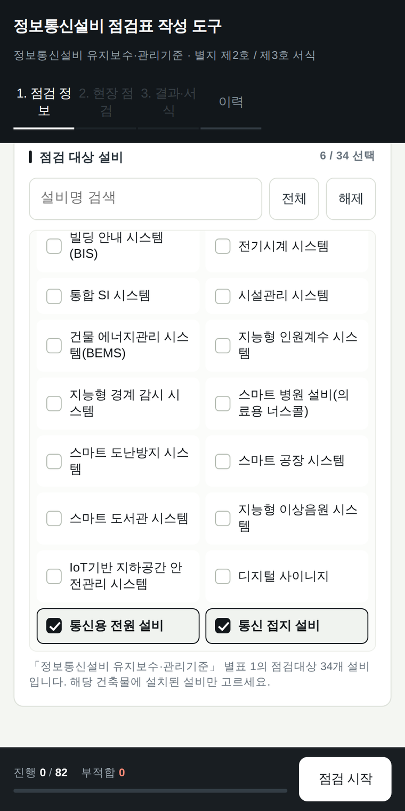
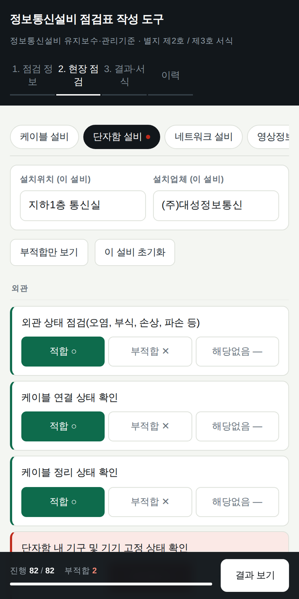
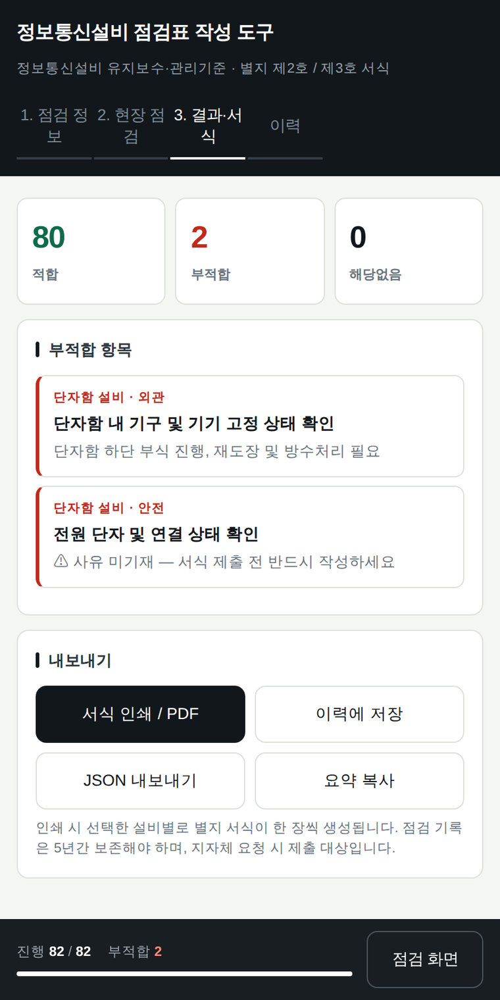
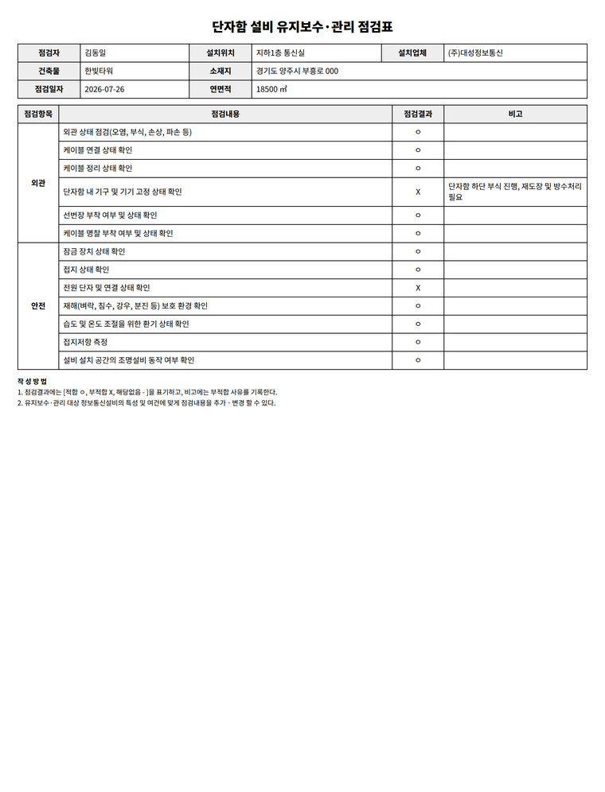

점검대상은 34개 설비이고, 설비 하나당 외관·기능·안전 항목이 최대 20여 개다. 건물 한 곳을 점검하면 손으로 옮겨 적어야 할 행이 수백 개가 된다.
실무는 현장에서 종이에 적고 사무실에서 한글 서식에 다시 입력하는 이중 작업이다. 옮겨 적는 과정에서 부적합 사유가 빠지면, 그 자체가 서류 흠결로 남는다. 나중에 문제가 생기면 이 서류로 책임을 가린다.
건축물 정보와 설비만 고르면 해설서 원문 점검항목이 자동으로 전개된다. 전 항목의 기본값은 '적합'이고, 실제로 손대야 하는 것은 부적합뿐이다.
부적합을 선택한 순간에만 사유 입력창이 열리고, 사유가 비어 있으면 결과 화면에서 경고로 잡아낸다. 현장에서 휴대폰으로 끝내고 그대로 법정 서식으로 인쇄한다.
| 기능 | 설명 |
|---|---|
| 서식 자동 전개 | 34개 설비 × 유지보수·관리 / 성능점검 2종. 설비 선택만으로 해당 점검항목 전체 생성 |
| 기본값 적합 · 예외 입력 | 전 항목 '적합' 선점. 부적합 선택 시에만 사유란 노출, 미기재 항목은 결과 화면에서 경고 표시 |
| 부적합만 보기 | 점검 후 부적합 항목만 필터링. 설비 탭에 빨간 점으로 미해결 표시 |
| 법정 서식 인쇄 | 별지 제2호(점검항목·점검내용·점검결과·비고) / 제3호(부적합사항·조치사항·현황사진란) 구조 그대로 출력 |
| 기록 보존 | localStorage 이력 저장 + JSON 내보내기 + 요약 텍스트 복사 |




설비 6종을 선택하면 6장이 연속 생성된다. 점검자·설치위치·설치업체·건축물 정보는 전 서식에 자동 반영되고, 설비별로 위치가 다르면 개별 수정할 수 있다. 부적합 항목의 비고란에는 현장에서 입력한 사유가 그대로 들어간다.
| 구분 | 내용 |
|---|---|
| 항목 원본 | 과학기술정보통신부 「정보통신설비 유지보수·관리 및 성능점검 업무 해설서」(2025년 8월) 제4장·제5장 — 34개 설비 전 항목 |
| 서식 구조 대조 | 완료 — 점검결과 표기(ㅇ/X/—), 부적합 시 사유·조치 기재 의무, 여건에 따른 항목 추가·변경 허용 조항까지 별지 원본과 일치 확인 |
| 유지보수·관리 점검표 | 34개 설비 전체 해설서 원문 항목 반영 |
| 성능점검표 | 19개 설비 원문 반영 완료 / 15개 설비 공통 점검 패턴 기반 초안 — 인정교육(2026.9.30~10.2) 배포 정식 서식과 대조 후 확정 예정 |
해설서는 설명본이고 제출 원본은 고시 별지 서식이다. 두 문서의 차이 가능성을 전제로 데이터를 설비별·항목별로 분리해 두었기 때문에, 정식 서식 확인 후 다른 부분만 교체하면 된다.